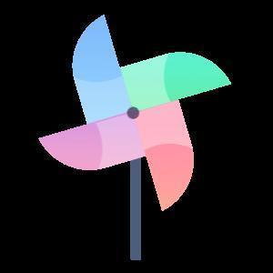
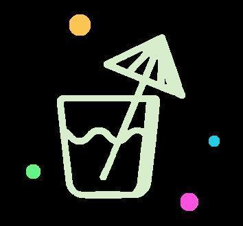
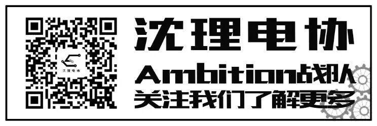

电控组他们来啦！

在电协 有这样一群人
他们获取快乐的方式很独特
他们通过敲代码描绘出属于自己的世界
他们与机械组，硬件组，视觉组完成联调
他们熟练运用各种电子器件，计算机软件
他们拧螺丝，焊板子
他们完成整个机器人控制程序的编写和调试
他们就是电控组
下面让我们来了解电控组的成员吧！

让我们来了解一下电控组的学长吧！

李旭东学长：收获特别特别多，学习了很多技能，在日常调试机器人过程中对嵌入式还有其他专业知识有了更加深刻且独特的见解，还收获了一群真挚、有梦想、有热爱的朋友们，最重要的是收获了许许多多的开心，我相信在电协电控组的这些日子将会成为我的大学生活中最珍贵的回忆。
张琛学长：比赛里有一个功能没有用过，比较陌生，写那段代码就挺心里没底。最后也没什么比较好的办法，错了就debug找bug，最后实现功能。
顾先旭学长：希望大家把学习这件事坚持到底，充实的过好每一天，终究会功 夫不负有心人，有所收获。
于嘉宁学长：世界上最重要的事，不在于我们在何处，而在于我们朝什么方向走。

然后，让我们了解一下大一的小萌新吧！

关一郎：因为电控组实现的是制作机器人的“大脑”部分比较有意思我就加了（其实我当时只会C啥也不会只能加电控组了）。
张锦标：因为当初学的是C语言，而电控组的考核内容和需求也是需要会C语言的，因此加入电控。
赵炜：主要是对机器人还有代码感兴趣。
关一郎：加入电控组后了解了许多有关单片机的知识，虽然总感觉自己很菜，但还是收获颇多的。
张锦标：加入电控组后学习到了stm32单片机的相关知识，并且也认识到了一些朋友。
赵炜：学习了挺多知识，比如stm32，还有各种中断之类的
关一郎：拓宽我的知识面，提高我的编程能力，学习硬件知识学会画板子等等，尽量多学。
张锦标：2021希望能和战队共进退，打入国赛。
赵炜：想多多打比赛，扩展视野，也是为了能拿奖
排版|苗力文

